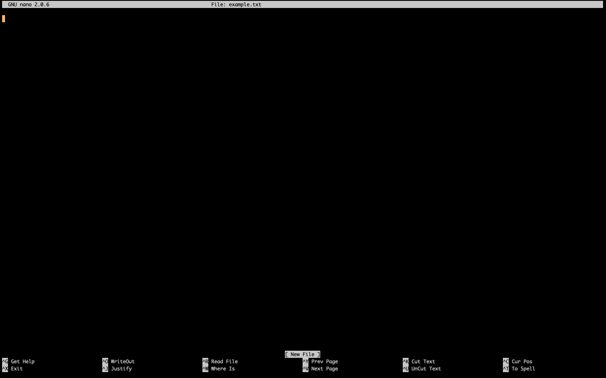

Using Nano to edit documents¶
Nano is a command line text editor which allows you to create, edit and save plaintext files. A plaintext file is a file that contains only text, with no formatting, such as those produced by Notepad on Windows. Generally, sequence data is stored in plaintext files, although the layout of these files generally conforms to some sort of standard (such as the fasta or fastq standards). We also sometimes use plaintext files to write and store parameters for specific software.
If you are new to using the command line, and need to make substantial changes to a document, its recommended to download the file onto your computer and edit in a program you are comfortable with. However, nano provides a quick way to make easy edits directly on the command line.
To create a document using nano you simply type nano followed by the name you would like to give the file. For example:
$ nano example.txt
Creating a file using the above command will open the text editor and your terminal will look something like the image below.
The cursor can be seen in the top left of the editor and options are seen at the bottom. The ^ character here is for the ctrl key. To see all options you can press ctrl+g. The M in the expanded options list is for the alt key.
You can now type whatever you need into this file. To save the file you press ctrl+o and the exit you press ctrl+x.
To open an existing file you type nano followed by the file name.
$ nano filename
It will show a similar screen to the image above but with all the text that file contains displayed. You can then go ahead and edit the document.
You can move your cursor to the text you want to edit by using the arrow keys on your keyboard. Alternatively, you can move your cursor to a specific point by pressing ctrl+_ then typing the line number followed by a comma then the column number.
Nano also has a search and replace function. If you press ctrl+\ you can search for a word, then type what you want to replace it with. You can then go through each instance of the searched term and decide if you would like to replace it by typing Y for yes or N for no. Alternatively you can type A to replace all. Be careful using this method as there may be times where you do not know how many times some text appears and could be damaging to accidentally replace it all.